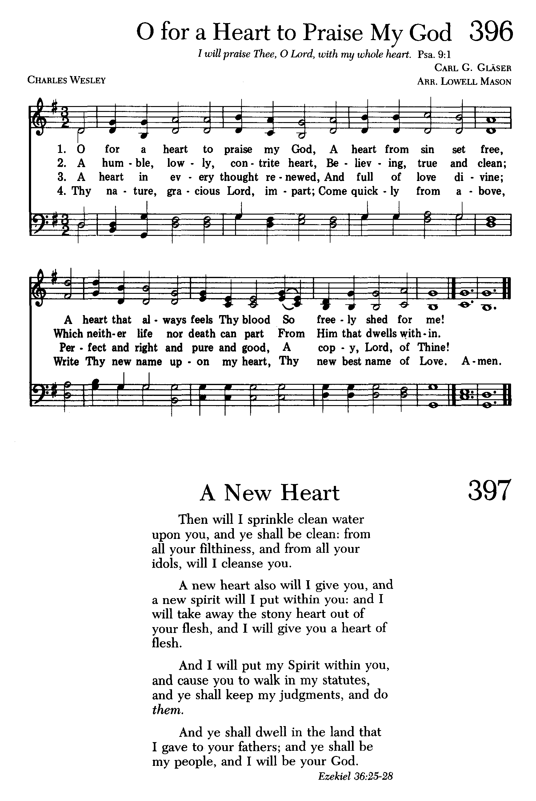

1467 GP261 O for a Heart to Praise My God 愿有赞美主之心
|
|
生命聖詩 - 362
願有新心 (O for a Heart to Praise My God) |
|
1 O for a heart to praise my God,
a heart from sin set free;
a heart that's sprinkled with the blood
so freely shed for me:
2 A heart resigned, submissive, meek,
my great Redeemer's throne;
where only Christ is heard to speak,
where Jesus reigns alone:
3 A humble, lowly, contrite heart,
believing, true, and clean,
which neither life nor death can part
from him that dwells within:
4 A heart in every thought renewed,
and full of love divine;
perfect and right and pure and good —
a copy, Lord, of thine.
5 Thy nature, gracious Lord, impart,
come quickly from above;
write thy new name upon my heart,
thy new best name of Love.
Source: Ancient
and Modern: hymns and songs for refreshing worship #132 |
願我常有讚主之心，此心從罪釋放，
時常覺得救主寶血，今已灑在其上。
願有溫和順服之心，為我恩主座位，
在此惟聞基督聲音，惟祂作王在內。
願有謙卑懊悔之心，篤信、誠實、清潔，
或生、或死、必與主親，總不與主離別。
願將我心舊態更換，換作我主容形，
念念更新，純潔純善，能與主心相同。
懇求恩主將你性情，自天為我下賚，
在我心中刻主新名，此名即是仁愛。 |

https://www.iwtfly.com/di-261-shou-yuan-you-zan-mei-zhu-zhi-xin.html

https://hymnary.org/hymn/SJ1989/page/395 |
| |
|
Music: Richmond
(Haweis) Thomas
Haweis, Carmina
Christo 1792 (🔊 
 ).
).
Alternate Tunes:
-
Arlington, Thomas
A. Arne, 1762. Arranged by Ralph
Harrison, 1784 (🔊 )
-
Azmon, Carl
G. Gläser, 1828. Arranged by Lowell
Mason, 1839 (🔊 )
-
Bude, Samuel
S. Wesley (1810–1876) (🔊 )
-
Solitude (Showalter), Anthony
J. Showalter, The
Singing School Tribute (Dayton,
Virginia: Ruebush, Kieffer,
1880), page 113 (🔊 )
-
Stockton (Wright), Thomas
Wright (1763–1829) (🔊 )

http://www.xueshengshi.com/?p=3355
简介（一） （来源：《岁首到年终》）
愿有赞美主之心 O for a Heart to Praise My God
Charles Wesley, 1707-1788
耶和华是我的力量，我的诗歌，也成了我的拯救。这是我的神，我要赞美祂。（出 15:2）
我们不都是诗人，不都有作诗歌的恩赐，不都会将我们那甘美的思想借着诗歌表达出来，使人的心得着快乐、使别人疲乏软弱的生活得着平安喜乐和鼓励。
但我们都有一个方法可以写诗，只要愿意，我们都能使我们的人生成为诗歌，这也是神对我们的托付。那就是将我们的人生活出基督馨香之气，使我们四周围的人从我们身上看见基督的荣美。如果人生是诗歌，那么我们要把每日神给我们的音符安排在五线谱上，让它变成悦耳之音乐。
这些音符就是神给我们的本份、工作、岗位、角色、责任，祇要我们顺服神的安排，遵行祂的旨意，在各人受托的职责忠心，便是一首完美的诗歌，蒙主使用。
本诗是卫理公会创始人之一 Charles Wesley 所作。有关他的生平事迹在他所写的其它圣诗中已介绍，在此省略。
Charles Wesley 一生写诗共约六千五百首，今天各宗派之诗集皆有其作品。 1762 年他出版了一部经文短歌集（ Short Scripture
Hymns ），里面的圣诗，都是根据圣经章节而写。这首「愿有赞美主之心」即其中之一。此歌乃根据诗篇 51:10
「神啊，求你为我造清洁的心，使我里面重新有正直的灵」写成。
愿我常有赞主之心，此心蒙主释放，
此心常觉救主为我，把血洒在其上！
愿有谦卑温和之心，笃信、诚实、清洁，
或生或死与主相亲，永不与主离别。
愿将我心旧态换新，换作我主容形，
意念更新纯洁纯善，能与主心相印！
恳求恩主将祢性情，自天上降下来，
在我心中刻主新名，此名即是仁爱。
＊基督徒应该从头到脚赞美主！ ── 奥古斯丁
颂主之心歌
O for a heart to praise my God
经文：“上帝啊，求你为我造清洁的心，使我里面重新有正直的灵 ” (诗51：1O)。
这首《颂主之心歌》是查理.卫斯理 (事略参阅第74首)根据上述的一节经文写成。卫氏原来的标题是《切望圣洁》。

请看诗中各节所描写的“心”是怎样的心；
一、颂主之心 (第一节原意为“求主给我一颗赞扬上主之心，
一颗脱离罪恶得到自由之心，求主给我一颗时常思念救主宝血之心)；
二、温和顺服之心；
三、谦卑懊悔之心。
四、五两节更是令我们高山仰止：
愿将我心完全改变，换作我主形容，
念念更新，纯洁纯善，能与主心相同。
恳求恩主将主性情，从天赐给我心，
在我心中，刻主圣名，仁爱簇新之名。
有人说：“这是一首非常美好、祈求爱心的诗，使我们的灵魂纯洁无瑕，祈求主赐我们更大的爱心。”
这首诗的调名为《ARLINGTON》，源自英国音乐家阿恩博士所谱的歌剧《阿塔塞克西斯》的序曲中的小步舞曲，由哈里逊牧师 (Harrison，1748一181O)改编成赞美诗。
阿恩 (T．A.Arne，171O一1778)是英国著名作曲家，父亲是作椅垫的工人，要他学法律当律师，但他执意要学音乐，在学法律时就开始弹奏古钢琴，学成后又教他妹妹学唱，使她成为一位著名的女低音歌唱家。韩德尔 (事略参阅第75首)所写的《弥赛亚》中的女低音部分就是以她的歌喉为样板而写成的。她也是第一次演唱《弥赛亚》时的女低音独唱家。阿恩博士的音乐，主要是靠自学的，后来获得了音乐博士学位。
他是第一位在神曲合唱中使用女声的音乐家，在他以前，神曲演出时高音部分是用童声或阉人代替。他一生写过许多歌剧，也写过多部神曲和管风琴曲。
《颂主之心歌》是早期英国圣道会传教士理一视①翻译的。
①理一视 (J.Lees，1835一1904)，英国圣道会 (United．Methodist
Church，解放前在山东曾一度称圣道堂)传教士。1861年来华，在天津传道， 1864年到过蒙古。他翻译圣诗多首，《新编》除这首外，第323首是他根据布利斯作品改写的。
https://www.umcdiscipleship.org/resources/history-of-hymns-wesley-hymn-speaks-language-of-the-heart
History of Hymns: Wesley hymn speaks language of the heart
Charles Wesley
O for a heart to praise my God,
A heart from sin set free,
A heart that always feels thy blood
So freely shed for me.
Charles Wesley (1707-1788) wrote this hymn in the years immediately
following his disastrous mission trip to America in 1735, his subsequent
illness upon his return, and then the unbridled enthusiasm of his
conversion on Whitsunday (Pentecost Sunday), May 21, 1738.
This is a hymn of total commitment to God, a prayer for pureness of heart,
a plea for Christian perfection.
“O For a Heart to Praise My God” was introduced in the book Hymns and
Sacred Poems in 1742, published by John Wesley, originally with eight
stanzas. The scriptural basis was Psalm 51:10, thus the heading to the
hymn, “Make me a Clean Heart, O GOD, and renew a right Spirit within me.”
Thirty-eight years later, the eight-stanza hymn was included in a slightly
altered form in the monumental Wesley hymnal, A Collection of Hymns: For
the Use of the People Called Methodists (1780) under the category “For
Believers Groaning for Full Redemption.”
Wesley scholar James I. Warren Jr. describes this hymn as “Seeking
Perfection in Love.” In the first stanza, the sinner yearns for her or his
heart to be cleansed. Throughout the successive stanzas, the believer then
pleads to God to keep her or his heart pure, growing to be more like
Christ.
Each stanza explores the nature of the heart.
In every stanza, Wesley employs the technique of synecdoche, in which a
part—in this case the heart—substitutes for the whole. In the first
stanza, the poet yearns for a heart to praise God for God’s redemption
and love, and to personally feel God’s presence. The only stanza that does
not mention the heart is the penultimate stanza, where the writer focuses
on the Redeemer’s “lips.”
As the Christian’s heart becomes more Christ-like, the Christian is moving
toward perfection. The language of stanza one is passionate: “. . . a
heart that always feels thy blood/so freely shed for me.”
In stanza two, Wesley uses the rhetorical devise of
tautology—repetition of the same idea in different words. “Resign’d,
submissive, meek” are all different expressions for the same idea. This
was Wesley’s way of emphasizing the importance of the sinner’s role in
coming to Christ for help.
In the third stanza, Wesley incorporates tautology again with the
words “humble,” “lowly” and “contrite,” along with “Believing, true, and
clean” to reiterate that the humble sinner who comes to Christ will have
her or his heart renewed.
Again, Charles Wesley uses tautology in the last half of stanza four—“perfect
and right and pure and good, a copy”—to call attention to Christ’s
perfection and how Christians should strive to be like their Savior.
Finally, Wesley penned the following words in the 1742 collection:
Thy Nature, dearest LORD, impart,
Come quickly from above,
Write Thy New Name upon my Heart,
Thy New, Best Name of Love.
The word “heart,” not used in the previous stanza, reappears.
Wesley employs personification—the believer pleads for “Love” (an image of
Christ) to be written on the heart.
“O For a Heart to Praise My God” appears in the UM Hymnal (1989) in the
section, “Sanctifying and Perfecting Grace,” in five stanzas (stanzas
one through four and eight of the original).
The hymn is paired with the tune, RICHMOND, composed by Thomas Haweis
(1734-1820) for a friend named Leigh Richmond, who was a rector at Turvey,
Bedfordshire. According to the hymnal’s editor, the Rev. Carlton Young,
“RICHMOND entered our hymnals in 1966. The tune along with the text is
seldom sung, though many think it easy to sing.”
 Thomas Haweis (1734–1820)
Thomas Haweis (1734–1820)
Charles Wesley’s hymns often not only employ the theme of the heart, but
also speak the language of the heart or, as a hymn from the same era
says—“the music of the heart” (“Praise the Lord Who Reigns Above,” No. 96,
stanza two).
Mr. Moore is a candidate for the master of sacred music degree, Perkins
School of Theology, and studies hymnology with Dr. Michael Hawn
https://hymnary.org/text/o_for_a_heart_to_praise_my_god
Notes
O for a
heart to praise my God. C. Wesley. [Holiness desired.]
Appeared in Hymns and Sacred Poems, 1742, p. 80, in 8 stanzas
of 4 lines. (Poeticl Works, 1868-72, vol. ii. p. 77). It is
based on the Prayer Book version of Psalms li. 10. From its appearance
in M. Madan's Psalms & Hymns, 1760, No. 3, to the present
time, it has been one of the most widely used of C. Wesley's hymns. It
was given in the Wesleyan Hymn Book, 1780, No. 334. G. J.
Stevenson's note in his Methodist Hymn Book Notes, 1883, p.
245, is of more than usual interest.
--John Julian, Dictionary
of Hymnology (1907)
O for a heart to praise my God,
A heart from sin set free!
A heart that always feels Thy blood
So freely spilt for me!
A heart resigned, submissive, meek,
My dear Redeemer’s throne,
Where only Christ is heard to speak,
Where Jesus reigns alone.
A humble, lowly, contrite, heart,
Believing, true and clean,
Which neither life nor death can part
From Him that dwells within.
A heart in every thought renewed
And full of love divine,
Perfect and right and pure and good,
A copy, Lord, of Thine.
Thy tender heart is still the same,
And melts at human woe:
Jesu, for Thee distressed I am,
I want Thy love to know.
My heart, Thou know’st, can never rest
Till Thou create my peace;
Till of mine Eden repossessed,
From self, and sin, I cease.
Fruit of Thy gracious lips, on me
Bestow that peace unknown,
The hidden manna, and the tree
Of life, and the white stone.
Thy nature, gracious Lord, impart;
Come quickly from above;
Write Thy new name upon my heart,
Thy new, best name of Love.
https://hymnstudiesblog.wordpress.com/2008/09/26/quoto-for-a-heart-to-praise-my-godquot/
on “O For a Heart to Praise My God”
“O For a Heart to Praise My God”
"O FOR A HEART TO PRAISE MY GOD"
"I will praise Thee, O Lord, with my whole heart" (Ps. 9.1)
INTRO.:
A hymn which seeks to praise God with the whole heart is "O For A Heart To
Praise My God." The text was written by Charles Wesley (1707-1788). It first
appeared with eight stanzas in his 1742 Hymns and Sacred Poems. Alterations were
made to the original by his brother John Wesley (1703-1791). This version was
published in his 1780 Collection. Most books today use no more than five of the
original stanzas. The tune (Balerma or Scotch Air) commonly used in our books
was composed by Francois Hippolyte Barthelemon (1741-1808). It is usually dated
about 1796 and was produced for the song "Durandarte and Balerma" from "The
Monk" by Matthew Gregory Lewis. The adaptation as a hymn tune was made by Robert
Simpson, who was born on Nov. 4, 1790, at Glasgow, Scotland. A weaver by trade,
he was always interested in music. While living in Glasgow, he led the singing
at the Albion St. Congregational Church, and after moving to Greenock, Scotland,
around 1823 he led the singing at the East Parish Church. During the summer of
1832, he died at Greenock during an epidemic of cholera.
Probably done around 1832 just before Sampson’s death, this arrangement was
found among his papers shortly after he died and first published in A Selection
of Original Sacred Music of 1833 edited by John Turnbull, who attributed it to
Simpson. Among hymnbooks published by members of the Lord’s church during the
twentieth century for use in churches of Christ, the song appeared in the 1921
Great Songs of the Church (No. 1) and the 1937 Great Songs of the Church No. 2
both edited by E. L. Jorgenson; and the text was used with a tune (Spring) by L.
C. Everett in the 1935 Christian Hymns (No. 1) edited by L. O. Sanderson. Today
the song may be found in the 1992 Praise for the Lord edited by John P. Wiegand;
and the text is found with a tune (Armenia) by Sylvanus D. Pond in the 1986
Great Songs Revised edited by Forrest M. McCann.
The song suggests the kind of heart that can offer acceptable praise unto the
Lord.
I. Stanza 1 says that our hearts must be free from sin
"O for a heart to praise my God, A heart from sin set free!
A heart that always feels the blood So feely shed for me."
A. To be right with God, our hearts need to be made free from sin: Rom. 6.17-18
B. The means by which we have forgiveness of sin is the blood of Christ: Eph.
1.7
C. That blood was freely shed for the remission of sin: Matt. 26.28
II. Stanza 2 says that our hearts must be meek
"A heart resigned, submissive, meek, My great Redeemer’s throne,
Where only Christ is heard to speak, Where Jesus reigns alone."
A. In order for the heart to be set free from sin, it must be meek to obey the
teaching of Christ: Jas. 1.21
B. Only in a meek heart can Jesus establish His throne and dwell therein: Eph.
3.17
C. A meek heart will always listen to Christ speaking through the scriptures: 2
Tim. 3.16-17
III. Stanza 3 says that our hearts must be lowly
"A humble, lowly, contrite heart, Believing, true, and clean,
Which neither life nor death can part From Him who dwells within."
A. The meek heart will also be humbly, lowly, and contrite because God requires
that kind of heart: Ps. 51.17
B. Only a humble, lowly, contrite heart can be made clean: Ps. 51.10
C. Such a heart will be determined that neither life nor death will ever part it
from the Lord: Rom. 8.38-39
IV. Stanza 4 says that our hearts must be renewed
"A heart in every thought renewed And full of love divine,
Perfect and right and pure and good, A copy, Lord, of Thine."
A. It is the renewing of our minds by which we are transformed: Rom. 12.2
B. A heart that is renewed will be full of love: Eph. 5.2
C. Such a heart will be a copy of the Lord’s heart, being transformed into the
same image: 2 Cor. 3.18
V. Stanza 5 says that our hearts must be guided from above
"Thy nature, gracious Lord, impart; Come quickly from above;
Write Thy new name upon my heart, Thy new, best name of Love."
A. When we look to the Lord above, we can become partakers of the divine nature:
2 Pet. 1.4
B. To ask the Lord to "come quickly from above" is simply a request that He will
come into our hearts and dwell within us: Jn. 14.23
C. When He does so, He will write His new name upon our hearts: Rev. 3.12
CONCL.:
Our books have some slightly different wording in a couple of stanzas, and I
have not been able to determine whether the differences are due to using the
original or using the altered version, but here they are:
3. "O for a lowly, contrite heart, Confiding, true, and clean…."
5. "Thy Spirit, gracious Lord, impart; Direct me from above.
May Thy dear name be near my heart; That dear, best name is Love."
Given all that the Lord has done for me in making salvation possible through the
blood of Christ, I should always be wishing, "O For A Heart To Praise My God."